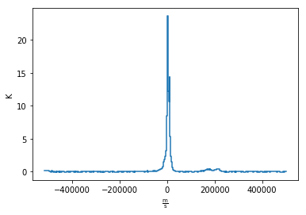

Dhanesh Krishnarao (DK), Shravan Shetty, Diego Gonzalez-Casanova, Audra Hernandez, Kris Stern
Find and download data using astroquery
Read and plot slices across different dimensions of a data cube
Compare different data sets (2D and 3D) by overploting contours
Transform coordinate projections and match data resolutions with
reproject
Create intensity moment maps / velocity maps with spectral_cube
FITS, radio astronomy, data cubes, contour plots
In this tutorial we will visualize 2D and 3D data sets in different coordinates (Galactic and equatorial).
The tutorial will walk you though a simple visual analysis of the Small Magellanic Cloud (SMC) using HI 21cm emission and a Herschel 250 micron map. We will learn how to read in data from VizieR, query and download matching data from Herschel using astroquery, and plot the resulting images in a multitude of ways.
The primary libraries we’ll be using are: astroquery, spectral_cube, reproject, matplotlib)
They can be installed using conda:
conda install -c astropy astroquery
conda install -c astropy spectral-cube
conda install -c astropy reproject
Alternatively, if you don’t use conda, you can use pip.
In[1]:
import numpy as np
import matplotlib.pyplot as plt
from matplotlib.colors import LogNorm
import astropy.units as u
from astropy.utils.data import download_file
from astropy.io import fits # We use fits to open the actual data file
from astropy.utils import data
data.conf.remote_timeout = 60
from spectral_cube import SpectralCube
from astroquery.esasky import ESASky
from astroquery.utils import TableList
from astropy.wcs import WCS
from reproject import reproject_interp
%matplotlib inline
Out[1]:
WARNING: AstropyDeprecationWarning: astropy.extern.six will be removed in 4.0, use the six module directly if it is still needed [astropy.extern.six]
We’ll be using HI 21 cm emission data from the HI4Pi survey. We want to look at neutral gas emission from the Magellanic Clouds and learn about the kinematics of the system and column densities. Using the VizieR catalog, we’ve found a relevant data cube to use that covers this region of the sky. You can also download an allsky data cube, but this is a very large file, so picking out sub-sections can be useful!
For us, the relevant file is available via ftp from CDS Strasbourg. We have a reduced version of it which will be a FITS data cube in Galactic coordinates using the tangential sky projection.
Sure, we could download this file directly, but why do that when we can load it up via one line of code and have it ready to use in our cache?
In[2]:
# Downloads the HI data in a fits file format
hi_datafile = download_file(
'http://data.astropy.org/tutorials/FITS-cubes/'+'reduced_TAN_C14.fits',
cache= False, show_progress = True)
Awesome, so now we have a copy of the data file (a FITS file). So how do we do anything with it?
Luckily for us, the spectral_cube package does a lot of the nitty gritty work for us to manipulate this data and even quickly look through it. So let’s open up our data file and read in the data as a SpectralCube!
The variable cube has the data using SpectralCube and hi_data is
the data cube from the FITS file without the special formating from
SpectralCube.
In[3]:
hi_data = fits.open(hi_datafile) # Open the FITS file for reading
cube = SpectralCube.read(hi_data) # Initiate a SpectralCube
hi_data.close() # Close the FITS file - we already read it in and don't need it anymore!
If you happen to already have the FITS file on your system, you can also skip the fits.open step and just directly read a FITS file with SpectralCube like this:
#cube = SpectralCube.read('path_to_data_file/TAN_C14.fits')
So what does this SpectralCube object actually look like? Let’s find out! The first check is to print out the cube.
In[4]:
print(cube)
Out[4]:
SpectralCube with shape=(450, 150, 150) and unit=K:
n_x: 150 type_x: GLON-TAN unit_x: deg range: 286.727203 deg: 320.797623 deg
n_y: 150 type_y: GLAT-TAN unit_y: deg range: -50.336450 deg: -28.401234 deg
n_s: 450 type_s: VRAD unit_s: m / s range: -598824.534 m / s: 600409.133 m / s
As we know, a data cube has three axes. In this case, there is Galactic
Longitude (x), Galactic Latitude (y), and a spectral axis in terms of a
LSR Velocity (z - listed as s with spectral_cube).
The data hidden in the cube lives as an ndarray with shape (n_s, n_y, n_x) so that axis 0 corresponds with the Spectral Axis, axis 1 corresponds with the Galactic Latitude Axis, and axis 2 corresponds with the Galactic Longitude Axis.
When we print(cube) we can see the shape, size, and units of all
axes as well as the data stored in the cube. With this cube, the units
of the data in the cube are temperatures (K). The spatial axes are in
degrees and the Spectral Axis is in (meters / second).
The cube also contains information about the coordinates corresponding to the data in the form of a WCS (World Coordinate System) object.
SpectralCube is clever and keeps all the data masked until you really need it so that you can work with large sets of data. So let’s see what our data actually looks like!
SpectralCube has a quicklook() method which can give a handy
sneak-peek preview of the data. It’s useful when you just need to glance
at a slice or spectrum without knowing any other information (say, to
make sure the data isn’t corrupted or is looking at the right region.)
To do this, we simply have to index our cube along one axis (for a slice) or two axes (for a spectrum):
In[5]:
cube[300, :, :].quicklook() # Slice the cube along the spectral axis, and display a quick image
Out[5]:
INFO: Auto-setting vmin to -1.688e+00 [aplpy.core]
INFO: Auto-setting vmax to 1.743e+01 [aplpy.core]
In[6]:
cube[:, 75, 75].quicklook() # Extract a single spectrum through the data cube
Out[6]:
In[None]:
In[None]:
The HI data cube we downloaded is bigger than we actually need it to be.
Let’s try zooming in on just the part we need and make a new
sub_cube.
The easiest way to do this is to cut out part of the cube with indices or coordinates.
We can extract the world coordinates from the cube using the
.world() method.
Warning: using .world() will extract coordinates from every position you ask for. This can be a TON of data if you don’t slice through the cube. One work around is to slice along two axes and extract coordinates just along a single dimension.
The output of .world() is an Astropy Quantity representing the
pixel coordinates, which includes units. You can extract these Astropy
Quantity objects by slicing the data.
In[7]:
_, b, _ = cube.world[0, :, 0] #extract latitude world coordinates from cube
_, _, l = cube.world[0, 0, :] #extract longitude world coordinates from cube
You can then extract a sub_cube in the spatial coordinates of the
cube
In[8]:
# Define desired latitude and longitude range
lat_range = [-46, -40] * u.deg
lon_range = [306, 295] * u.deg
# Create a sub_cube cut to these coordinates
sub_cube = cube.subcube(xlo=lon_range[0], xhi=lon_range[1], ylo=lat_range[0], yhi=lat_range[1])
print(sub_cube)
Out[8]:
SpectralCube with shape=(450, 41, 48) and unit=K:
n_x: 48 type_x: GLON-TAN unit_x: deg range: 295.647485 deg: 305.831248 deg
n_y: 41 type_y: GLAT-TAN unit_y: deg range: -47.080781 deg: -40.745361 deg
n_s: 450 type_s: VRAD unit_s: m / s range: -598824.534 m / s: 600409.133 m / s
/home/circleci/project/venv/lib/python3.6/site-packages/spectral_cube/base_class.py:158: FutureWarning: Using a non-tuple sequence for multidimensional indexing is deprecated; usearr[tuple(seq)]instead ofarr[seq]. In the future this will be interpreted as an array index,arr[np.array(seq)], which will result either in an error or a different result. inds = [i[view] for i in inds[::-1]] # numpy -> wcs order /home/circleci/project/venv/lib/python3.6/site-packages/spectral_cube/masks.py:632: FutureWarning: Using a non-tuple sequence for multidimensional indexing is deprecated; usearr[tuple(seq)]instead ofarr[seq]. In the future this will be interpreted as an array index,arr[np.array(seq)], which will result either in an error or a different result. return LazyMask(self._function, data=self._data[view], /home/circleci/project/venv/lib/python3.6/site-packages/spectral_cube/spectral_cube.py:1222: FutureWarning: Using a non-tuple sequence for multidimensional indexing is deprecated; usearr[tuple(seq)]instead ofarr[seq]. In the future this will be interpreted as an array index,arr[np.array(seq)], which will result either in an error or a different result. return self._new_cube_with(data=self._data[view],
We don’t really need data from such a large velocity range so let’s just
extract a little slab. We can do this easily, in any units that we want
using the .spectral_slab() method.
In[9]:
sub_cube_slab = sub_cube.spectral_slab(-300. *u.km / u.s, 300. *u.km / u.s)
print(sub_cube_slab)
Out[9]:
SpectralCube with shape=(226, 41, 48) and unit=K:
n_x: 48 type_x: GLON-TAN unit_x: deg range: 295.647485 deg: 305.831248 deg
n_y: 41 type_y: GLAT-TAN unit_y: deg range: -47.080781 deg: -40.745361 deg
n_s: 226 type_s: VRAD unit_s: m / s range: -299683.842 m / s: 301268.441 m / s
Moment maps are a useful analysis tool to study data cubes. In short, a moment is a weighted integral along an axis (typically the Spectral Axis) that can give information about the total Intensity (or column density), mean velocity, or velocity dispersion along lines of sight.
SpectralCube makes this very simple with the .moment() method. We
can convert to friendlier spectral units of km/s and these new 2D
projections can be saved as new FITS files, complete with modified WCS
information as well.
In[10]:
moment_0 = sub_cube_slab.with_spectral_unit(u.km/u.s).moment(order=0) # Zero-th moment
moment_1 = sub_cube_slab.with_spectral_unit(u.km/u.s).moment(order=1) # First moment
# Write the moments as a FITS image
# moment_0.write('hi_moment_0.fits')
# moment_1.write('hi_moment_1.fits')
print('Moment_0 has units of: ', moment_0.unit)
print('Moment_1 has units of: ', moment_1.unit)
# Convert Moment_0 to a Column Density assuming optically thin media
hi_column_density = moment_0 * 1.82 * 10**18 / (u.cm * u.cm) * u.s / u.K / u.km
Out[10]:
Moment_0 has units of: K km / s
Moment_1 has units of: km / s
## Display the Moment Maps
The WCSAxes framework in Astropy allows us to easily display images with different coordinate axes and projections.
As long as we have a WCS object associated with the data, it is easy to transfer that projection to a matplotlib axis. SpectralCube makes it easy to access just the WCS object associated with a cube object.
In[11]:
print(moment_1.wcs) # Examine the WCS object associated with the moment map
Out[11]:
WCS Transformation
This transformation has 2 pixel and 2 world dimensions
Array shape (Numpy order): None
Pixel Dim Data size Bounds
0 None None
1 None None
World Dim Physical Type Units
0 pos.galactic.lon deg
1 pos.galactic.lat deg
Correlation between pixel and world axes:
Pixel Dim
World Dim 0 1
0 yes yes
1 yes yes
As expected, the first moment image we created only has two axes (Galactic Longitude and Galactic Latitude). We can pass in this WCS object directly into a matplotlib axis instance.
In[12]:
# Initiate a figure and axis object with WCS projection information
fig = plt.figure(figsize=(18, 12))
ax = fig.add_subplot(111, projection=moment_1.wcs)
# Display the moment map image
im = ax.imshow(moment_1.hdu.data, cmap='RdBu_r', vmin=0, vmax=200)
ax.invert_yaxis() # Flips the Y axis
# Add axes labels
ax.set_xlabel("Galactic Longitude (degrees)", fontsize=16)
ax.set_ylabel("Galactic Latitude (degrees)", fontsize=16)
# Add a colorbar
cbar = plt.colorbar(im, pad=.07)
cbar.set_label('Velocity (km/s)', size=16)
# Overlay set of RA/Dec Axes
overlay = ax.get_coords_overlay('fk5')
overlay.grid(color='white', ls='dotted', lw=2)
overlay[0].set_axislabel('Right Ascension (J2000)', fontsize=16)
overlay[1].set_axislabel('Declination (J2000)', fontsize=16)
# Overplot column density contours
levels = (1e20, 5e20, 1e21, 3e21, 5e21, 7e21, 1e22) # Define contour levels to use
ax.contour(hi_column_density.hdu.data, cmap='Greys_r', alpha=0.5,
lw=3, levels=levels)
Out[12]:
/home/circleci/project/venv/lib/python3.6/site-packages/matplotlib/contour.py:1000: UserWarning: The following kwargs were not used by contour: 'lw'
s)
<matplotlib.contour.QuadContourSet at 0x7fb0352f19b0>
As you can see, the WCSAxes framework is very powerful and as easy as making any matplotlib style plot.
## Display a Longitude-Velocity Slice
The WCSAxes framework in Astropy also lets us slice the data accross different dimensions. It is often useful to slice along a single latitude and display an image showing longtitude and velocity information only (position-velocity or longitude-velocity diagram).
This can be done by specifying the slices keyword and selecting the
appropriate slice through the data.
slices requires a 3D tuple containing the index to be sliced along
and where we want the two axes to be displayed. This should be specified
in the same order as the WCS object (longitude, latitude, velocity) as
opposed to the order of numpy array holding the data (velocity,
latitude, longitude).
We then select the appropriate data by indexing along the numpy array.
In[13]:
lat_slice = 18 # Index of latitude dimension to slice along
# Initiate a figure and axis object with WCS projection information
fig = plt.figure(figsize=(18, 12))
ax = fig.add_subplot(111, projection=sub_cube_slab.wcs, slices=('y', lat_slice, 'x'))
# Above, we have specified to plot the longitude along the y axis, pick just the lat_slice indicated,
# and plot the velocity along the x axis
# Display the slice
im = ax.imshow(sub_cube_slab[:, lat_slice, :].transpose().data) # Display the image slice
ax.invert_yaxis() # Flips the Y axis
# Add axes labels
ax.set_xlabel("LSR Velocity (m/s)", fontsize=16)
ax.set_ylabel("Galactic Longitude (degrees)", fontsize=16)
# Add a colorbar
cbar = plt.colorbar(im, pad=.07, orientation='horizontal')
cbar.set_label('Temperature (K)', size=16)
Out[13]:
WARNING: WCSWarning: Slicing across a celestial axis results in an invalid WCS, so the celestial projection (TAN) is being removed. The WCS indices being kept were [0 2]. [spectral_cube.wcs_utils]
WARNING: WCSWarning: Slicing across a celestial axis results in an invalid WCS, so the celestial projection (TAN) is being removed. The view used was (slice(None, None, None), 18, slice(None, None, None)). [spectral_cube.wcs_utils]
As we can see, the SMC seems to be only along positive velocities.
In[None]:
In[None]:
In[None]:
This is great, but we want to compare the HI emission data with Herschel 350 micron emission to trace some dust. This can be easily done with astroquery. We can query for the data by mission, take a quick look at the table of results, and download data after selecting a specific wavelength or filter.
Since we are looking for Herschel data from an ESA mission, we will use the astroquery.ESASky class.
Specifically, the ESASKY.query_region_maps() method allows us to
search for a specific region of the sky either using an Astropy SkyCoord
object or a string specifying an object name. In this case, we can just
search for the SMC. A radius to search around the object can also be
specified.
In[14]:
# Query for Herschel data in a 1 degree radius around the SMC
result = ESASky.query_region_maps('SMC', radius=1*u.deg, missions='Herschel')
print(result)
Out[14]:
TableList with 1 tables:
'0:HERSCHEL' with 12 column(s) and 28 row(s)
WARNING: W35: None:4:0: W35: 'value' attribute required for INFO elements [astropy.io.votable.tree]
WARNING: W35: None:5:0: W35: 'value' attribute required for INFO elements [astropy.io.votable.tree]
WARNING: W35: None:6:0: W35: 'value' attribute required for INFO elements [astropy.io.votable.tree]
WARNING: W35: None:7:0: W35: 'value' attribute required for INFO elements [astropy.io.votable.tree]
WARNING: W35: None:9:0: W35: 'value' attribute required for INFO elements [astropy.io.votable.tree]
Here, the result is a TableList which contains 24 Herschel data products that can be downloaded. We can see what information is available in this TableList by examining the keys in the Herschel Table.
In[15]:
result['HERSCHEL'].keys()
Out[15]:
['postcard_url',
'product_url',
'observation_id',
'observation_oid',
'ra_deg',
'dec_deg',
'target_name',
'instrument',
'filter',
'start_time',
'duration',
'stc_s']
We want to find a 350 micron image, so we need to look closer at the filters used for these observations.
In[16]:
result['HERSCHEL']['filter']
Out[16]:
<MaskedColumn name='filter' dtype='object' length=28>| 70, 160 |
| 100, 160 |
| 70, 160 |
| 100, 160 |
| 70, 160 |
| 70, 160 |
| 250, 350, 500 |
| 100, 160 |
| 70, 160 |
| 70, 160 |
| 70, 160 |
| 70, 160 |
| ... |
| 250, 350, 500 |
| 100, 160 |
| 250, 350, 500 |
| 70, 160 |
| 250, 350, 500 |
| 100, 160 |
| 70, 160 |
| 250, 350, 500 |
| 70, 160 |
| 70, 160 |
| 100, 160 |
| 70, 160 |
Luckily for us, there is an observation made with three filters:
250,350, and 500 microns. This is the object we will want to download.
One way to do this is by making a boolean mask to select out the Table
entry corresponding with the desired filter. Then,
the ESASky.get_maps() method will download our data provided a
TableList argument.
In[17]:
filters = result['HERSCHEL']['filter'].astype(str) # Convert the list of filters from the query to a string
# Construct a boolean mask, searching for only the desired filters
mask = np.array(['250, 350, 500' == s for s in filters], dtype='bool')
# Re-construct a new TableList object containing only our desired query entry
target_obs = TableList({"HERSCHEL":result['HERSCHEL'][mask]}) # This will be passed into ESASky.get_maps()
IR_images = ESASky.get_maps(target_obs) # Download the images
IR_images['HERSCHEL'][0]['350'].info() # Display some information about the 350 micron image
Out[17]:
INFO: Starting download of HERSCHEL data. (5 files) [astroquery.esasky.core]
INFO: Downloading Observation ID: 1342198566 from http://archives.esac.esa.int/hsa/whsa-tap-server/data?RETRIEVAL_TYPE=STANDALONE&observation_oid=8634358&DATA_RETRIEVAL_ORIGIN=UI [astroquery.esasky.core]
INFO: [Done] [astroquery.esasky.core]
INFO: Downloading Observation ID: 1342198565 from http://archives.esac.esa.int/hsa/whsa-tap-server/data?RETRIEVAL_TYPE=STANDALONE&observation_oid=8613787&DATA_RETRIEVAL_ORIGIN=UI [astroquery.esasky.core]
INFO: [Done] [astroquery.esasky.core]
INFO: Downloading Observation ID: 1342205055 from http://archives.esac.esa.int/hsa/whsa-tap-server/data?RETRIEVAL_TYPE=STANDALONE&observation_oid=8614152&DATA_RETRIEVAL_ORIGIN=UI [astroquery.esasky.core]
INFO: [Done] [astroquery.esasky.core]
INFO: Downloading Observation ID: 1342198590 from http://archives.esac.esa.int/hsa/whsa-tap-server/data?RETRIEVAL_TYPE=STANDALONE&observation_oid=8634359&DATA_RETRIEVAL_ORIGIN=UI [astroquery.esasky.core]
INFO: [Done] [astroquery.esasky.core]
INFO: Downloading Observation ID: 1342205092 from http://archives.esac.esa.int/hsa/whsa-tap-server/data?RETRIEVAL_TYPE=STANDALONE&observation_oid=8614195&DATA_RETRIEVAL_ORIGIN=UI [astroquery.esasky.core]
INFO: [Done] [astroquery.esasky.core]
INFO: Downloading of HERSCHEL data complete. [astroquery.esasky.core]
INFO: Maps available at /home/circleci/project/tutorials/notebooks/FITS-cubes/Maps. [astroquery.esasky.core]
Filename: Maps/HERSCHEL/anonymous1560880253/hspirepmw401_25pxmp_0110_m7303_1342198565_1342198566_1462476888800.fits.gz
No. Name Ver Type Cards Dimensions Format
0 PRIMARY 1 PrimaryHDU 184 ()
1 image 1 ImageHDU 47 (2407, 2141) float64
2 error 1 ImageHDU 47 (2407, 2141) float64
3 coverage 1 ImageHDU 47 (2407, 2141) float64
4 History 1 ImageHDU 23 ()
5 HistoryScript 1 BinTableHDU 39 84R x 1C [326A]
6 HistoryTasks 1 BinTableHDU 46 65R x 4C [1K, 27A, 1K, 9A]
7 HistoryParameters 1 BinTableHDU 74 450R x 10C [1K, 20A, 13A, 196A, 1L, 1K, 1L, 74A, 11A, 41A]
Since we are just doing some qualitative analysis, we only need the image, but you can easily access lots of other information from our downloaded object, such as errors.
Let’s go ahead and extract just the WCS information and image data from the 350 micron image.
In[18]:
herschel_header = IR_images['HERSCHEL'][0]['350']['image'].header
herschel_wcs = WCS(IR_images['HERSCHEL'][0]['350']['image']) # Extract WCS information
herschel_imagehdu = IR_images['HERSCHEL'][0]['350']['image'] # Extract Image data
print(herschel_wcs)
Out[18]:
WCS Transformation
This transformation has 2 pixel and 2 world dimensions
Array shape (Numpy order): (2141, 2407)
Pixel Dim Data size Bounds
0 2407 None
1 2141 None
World Dim Physical Type Units
0 pos.eq.ra deg
1 pos.eq.dec deg
Correlation between pixel and world axes:
Pixel Dim
World Dim 0 1
0 yes yes
1 yes yes
With this, it’s just as easy as before to display this image using
matplotlib with
WCSAxes
and the LogNorm() object so we can log scale our image.
In[19]:
# Initiate a figure and axis object with WCS projection information
fig = plt.figure(figsize=(18, 12))
ax = fig.add_subplot(111, projection=herschel_wcs)
# Display the moment map image
im = ax.imshow(herschel_imagehdu.data, cmap='viridis',
norm=LogNorm(), vmin=2, vmax=50)
# ax.invert_yaxis() # Flips the Y axis
# Add axes labels
ax.set_xlabel("Right Ascension", fontsize = 16)
ax.set_ylabel("Declination", fontsize = 16)
ax.grid(color = 'white', ls = 'dotted', lw = 2)
# Add a colorbar
cbar = plt.colorbar(im, pad=.07)
cbar.set_label(''.join(['Herschel 350'r'$\mu$m ','(', herschel_header['BUNIT'], ')']), size = 16)
# Overlay set of Galactic Coordinate Axes
overlay = ax.get_coords_overlay('galactic')
overlay.grid(color='black', ls='dotted', lw=1)
overlay[0].set_axislabel('Galactic Longitude', fontsize=14)
overlay[1].set_axislabel('Galactic Latitude', fontsize=14)
Out[19]:
/home/circleci/project/venv/lib/python3.6/site-packages/matplotlib/colors.py:1028: RuntimeWarning: invalid value encountered in less_equal
mask |= resdat <= 0
/home/circleci/project/venv/lib/python3.6/site-packages/matplotlib/colors.py:1028: RuntimeWarning: invalid value encountered in less_equal
mask |= resdat <= 0
/home/circleci/project/venv/lib/python3.6/site-packages/matplotlib/colors.py:1028: RuntimeWarning: invalid value encountered in less_equal
mask |= resdat <= 0
To visually compare the neutral gas and dust as traced by HI 21 cm
emission and IR 30 micron emission, we can use contours and colorscale
images produced using the
WCSAxes
framework and the .get_transform() method.
The WCSAxes.get_transform() method returns a transformation from a specified frame to the pixel/data coordinates. It accepts a string specifying the frame or a WCS object.
In[20]:
# Initiate a figure and axis object with WCS projection information
fig = plt.figure(figsize=(18, 12))
ax = fig.add_subplot(111, projection=herschel_wcs)
# Display the moment map image
im = ax.imshow(herschel_imagehdu.data, cmap='viridis',
norm=LogNorm(), vmin=5, vmax=50, alpha=.8)
# ax.invert_yaxis() # Flips the Y axis
# Add axes labels
ax.set_xlabel("Right Ascension", fontsize=16)
ax.set_ylabel("Declination", fontsize=16)
ax.grid(color = 'white', ls='dotted', lw=2)
# Extract x and y coordinate limits
x_lim = ax.get_xlim()
y_lim = ax.get_ylim()
# Add a colorbar
cbar = plt.colorbar(im, fraction=0.046, pad=-0.1)
cbar.set_label(''.join(['Herschel 350'r'$\mu$m ','(', herschel_header['BUNIT'], ')']), size=16)
# Overlay set of RA/Dec Axes
overlay = ax.get_coords_overlay('galactic')
overlay.grid(color='black', ls='dotted', lw=1)
overlay[0].set_axislabel('Galactic Longitude', fontsize=14)
overlay[1].set_axislabel('Galactic Latitude', fontsize=14)
hi_transform = ax.get_transform(hi_column_density.wcs) # extract axes Transform information for the HI data
# Overplot column density contours
levels = (2e21, 3e21, 5e21, 7e21, 8e21, 1e22) # Define contour levels to use
ax.contour(hi_column_density.hdu.data, cmap='Greys_r', alpha=0.8, lw=5, levels=levels,
transform=hi_transform) # include the transform information with the keyword "transform"
# Overplot velocity image so we can also see the Gas velocities
im_hi = ax.imshow(moment_1.hdu.data, cmap='RdBu_r', vmin=0, vmax=200, alpha=0.5, transform=hi_transform)
# Add a second colorbar for the HI Velocity information
cbar_hi = plt.colorbar(im_hi, orientation='horizontal', fraction=0.046, pad=0.07)
cbar_hi.set_label('HI 'r'$21$cm Mean Velocity (km/s)', size=16)
# Apply original image x and y coordinate limits
ax.set_xlim(x_lim)
ax.set_ylim(y_lim)
Out[20]:
/home/circleci/project/venv/lib/python3.6/site-packages/matplotlib/contour.py:1000: UserWarning: The following kwargs were not used by contour: 'lw'
s)
(-0.5, 2140.5)
/home/circleci/project/venv/lib/python3.6/site-packages/matplotlib/colors.py:1028: RuntimeWarning: invalid value encountered in less_equal
mask |= resdat <= 0
/home/circleci/project/venv/lib/python3.6/site-packages/matplotlib/colors.py:1028: RuntimeWarning: invalid value encountered in less_equal
mask |= resdat <= 0
/home/circleci/project/venv/lib/python3.6/site-packages/matplotlib/colors.py:1028: RuntimeWarning: invalid value encountered in less_equal
mask |= resdat <= 0
The reproject package is a powerful tool allowing for image data to be transformed into a variety of projections and resolutions. It’s most powerful use is in fact to transform data from one map projection to another without losing any information and still properly conserving flux values within the data. It even has a method to perform a fast reprojection if you are not too concerned with the absolute accuracy of the data values.
A simple use of the reproject package is to scale down (or up) resolutions of an image artificially. This could be a useful step if you are trying to get emission line ratios or directly compare the Intensity or Flux from a tracer to that of another tracer in the same physical point of the sky.
From our previously made images, it should be clear that the IR Herschel Image has a higher spatial resolution than that of the HI data cube. We can look into this more by taking a better look at both header objects and using reproject to downscale the Herschel Image.
In[21]:
print('IR Resolution (dx,dy) = ', herschel_header['cdelt1'], herschel_header['cdelt2'])
print('HI Resolution (dx,dy) = ', hi_column_density.hdu.header['cdelt1'], hi_column_density.hdu.header['cdelt1'])
Out[21]:
IR Resolution (dx,dy) = -0.002777777777778 0.002777777777777778
HI Resolution (dx,dy) = -0.14944444438467 -0.14944444438467
Note: Different ways of accessing the header are shown above corresponding to the different object types (coming from SpectralCube vs astropy.io.fits)
As we can see, the IR data has over 10 times higher spatial resolution. In order to create a new projection of an image, all we need to specifiy is a new header containing WCS information to transform into. These can be created manually if you wanted to completely change something about the projection type (i.e. going from a Mercator map projection to a Tangential map projection). For us, since we want to match our resolutions, we can just “steal” the WCS object from the HI data. Specifically, we will be using the reproject_interp() function. This takes two arguments: an HDU object that you want to reproject, and a header containing WCS information to reproject onto.
In[22]:
rescaled_herschel_data, _ = reproject_interp(herschel_imagehdu,
# reproject the Herschal image to match the HI data
hi_column_density.hdu.header)
rescaled_herschel_imagehdu = fits.PrimaryHDU(data = rescaled_herschel_data,
# wrap up our reprojection as a new fits HDU object
header = hi_column_density.hdu.header)
Out[22]:
/home/circleci/project/venv/lib/python3.6/site-packages/reproject/interpolation/core_celestial.py:26: FutureWarning: Conversion of the second argument of issubdtype fromfloattonp.floatingis deprecated. In future, it will be treated asnp.float64 == np.dtype(float).type. if not np.issubdtype(array.dtype, np.float):
rescaled_herschel_imagehdu will now behave just like the other FITS
images we have been working with, but now with a degraded resolution
matching the HI data. This includes having its native coordinates in
Galactic rather than RA and Dec.
In[23]:
# Initiate a figure and axis object with WCS projection information
fig = plt.figure(figsize = (18,12))
ax = fig.add_subplot(111,projection = WCS(rescaled_herschel_imagehdu))
# Display the moment map image
im = ax.imshow(rescaled_herschel_imagehdu.data, cmap = 'viridis',
norm = LogNorm(), vmin = 5, vmax = 50, alpha = .8)
#ax.invert_yaxis() # Flips the Y axis
# Add axes labels
ax.set_xlabel("Galactic Longitude", fontsize = 16)
ax.set_ylabel("Galactic Latitude", fontsize = 16)
ax.grid(color = 'white', ls = 'dotted', lw = 2)
# Extract x and y coordinate limits
x_lim = ax.get_xlim()
y_lim = ax.get_ylim()
# Add a colorbar
cbar = plt.colorbar(im, fraction=0.046, pad=-0.1)
cbar.set_label(''.join(['Herschel 350'r'$\mu$m ','(', herschel_header['BUNIT'], ')']), size = 16)
# Overlay set of RA/Dec Axes
overlay = ax.get_coords_overlay('fk5')
overlay.grid(color='black', ls='dotted', lw = 1)
overlay[0].set_axislabel('Right Ascension', fontsize = 14)
overlay[1].set_axislabel('Declination', fontsize = 14)
hi_transform = ax.get_transform(hi_column_density.wcs) # extract axes Transform information for the HI data
# Overplot column density contours
levels = (2e21, 3e21, 5e21, 7e21, 8e21, 1e22) # Define contour levels to use
ax.contour(hi_column_density.hdu.data, cmap = 'Greys_r', alpha = 0.8, lw = 5, levels = levels,
transform = hi_transform) # include the transform information with the keyword "transform"
# Overplot velocity image so we can also see the Gas velocities
im_hi = ax.imshow(moment_1.hdu.data, cmap = 'RdBu_r', vmin = 0, vmax = 200, alpha = 0.5, transform = hi_transform)
# Add a second colorbar for the HI Velocity information
cbar_hi = plt.colorbar(im_hi, orientation = 'horizontal', fraction=0.046, pad=0.07)
cbar_hi.set_label('HI 'r'$21$cm Mean Velocity (km/s)', size = 16)
# Apply original image x and y coordinate limits
ax.set_xlim(x_lim)
ax.set_ylim(y_lim)
Out[23]:
/home/circleci/project/venv/lib/python3.6/site-packages/matplotlib/contour.py:1000: UserWarning: The following kwargs were not used by contour: 'lw'
s)
(-0.5, 40.5)
/home/circleci/project/venv/lib/python3.6/site-packages/matplotlib/colors.py:1028: RuntimeWarning: invalid value encountered in less_equal
mask |= resdat <= 0
/home/circleci/project/venv/lib/python3.6/site-packages/matplotlib/colors.py:1028: RuntimeWarning: invalid value encountered in less_equal
mask |= resdat <= 0
/home/circleci/project/venv/lib/python3.6/site-packages/matplotlib/colors.py:1028: RuntimeWarning: invalid value encountered in less_equal
mask |= resdat <= 0
The real power of reproject is in actually changing the map projection
used to display the data. This is done by creating a WCS object that
contains a different projection type such as
CTYPE : 'RA---CAR' 'DEC--CAR' as opposed to
CTYPE : 'RA---TAN' 'DEC--TAN'.